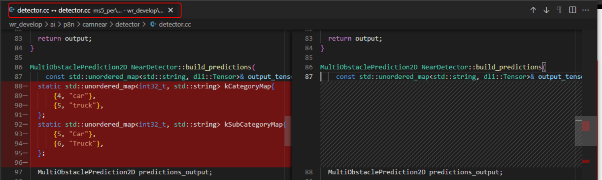

95_WR MS5 ISSSUSES [Record of acceptance issues]
0629 WR acceptance kick-off
MM is as followed
RB collected preliminary feedback and demand for WR XPER MS5 deliverables as below:
https://rbw3pmt.atlassian.net/wiki/spaces/W3RWC/pages/196182036/kick-off+meeting+0629
WR PER KPI test report release based on VER and SYS demand @ Yin Tianqiang ，DD: 2023-07-07
Please prepare experiment report evidence of Camnear_detection model for near range truck/bus detection performance @ Guo Xiang, DD：2023-07-06
For Specific model could not start verification, WR should provide guidance and support on time, which not block RB verification work @ Yin Tianqiang ，DD: 2023-06-30
Please propose timeslot of MS5 MS5 XPER acceptance verification from RB management level expectation @Wu Alex, DD: 2023-07-06
Based on above timeslot, WR should positively update MS5 documents @ Yin Tianqiang
0705 WR align meeting ( update by Sep. 8 )
There are many document errors, inconsistent with the code, update time -d.d. jul. 12 à output doc.v5.1
Jul. 12 Published V5.1 positive modification design documents, there are still problems
The question of the test report is poor, the release time jul. 7 @t t
No valid test report
The operating environment of the delivery code is not ready, lacks the necessary dependent library and accurate training data interface, there are still three tasks that cannot run -date clarify jul. 6
Can run
It is necessary to give Wenyuan's environmental configuration strategy and script relying on library → No update
The consistency of Wenyuan verification code, training data and operating environment
Model Conversion and post -quantified script lack -D.D. TBD? -> Dipped and delivered to RB
Some tasks TEST SET is consistent with MS4, and the number is small, such as: LANE_DETECTION → No update
The scale and distribution of document clarification training set and the scale and distribution of test set -d.D. Jul. 7 Dating clarification
Some task training data is inconsistent with documents, such as: traffic light. -D.D. Jul. 15
Wenyuan needs to clarify that the test process and related code of the submissive module on the Orin -TBD → No update
Summary
|
|
Doc |
Training Code |
Reproduce results |
AOS Code |
Data |
Comments |
|
Camdetect |
Design Doc, User Manual complete |
|
[KPI low] Complete training Reapping average indicator AP: About 2% low APL: About 2% low |
|
|
|
|
Camnear_detection |
Lack of labeling doc 13 Jul 2023 ：
|
Make Package script is missing; The lack of script of the TRT model, there is no relevant introduction of the document; |
[KPI low] About 0.3%lower than Readme's KPI; 07 Jul 2023 ：
|
07 Jul 2023 ：
|
The amount of data is consistent with the description of the documentation |
|
|
Camera_prediction |
Design Doc, User Manual complete |
|
[KPI indicator shortage] AP and APL can be aligned.index [lack] Lack of Detection_PRECISION, DETECTION_PRECISION_L, DETECTION_RECALL, VELOCITY_EN_ERROR, VELOCITY_MEAN_EN_EN_ERRRORRORORRORORORORORORORORO Mean_error, yaw_mean_error indicator |
|
Environment error when running a trainer script |
|
|
Lane_detection |
Complete documentation |
The training code in the warehouse is inconsistent with the parameter configuration of the code part in the code folder in Perception_MS5_DELIVERY; |
[KPI indicator shortage]
|
14 Jul 2023 Basic is basically the same as MS4, the main changes:
|
Document does not describe the amount of specific data The training set increased to one million, but Test Set still uses the data provided by MS3 1K+; |
|
|
Lane_prediction |
Design Doc, User Manual complete |
Can run directly |
The indicator can be aligned |
It is generally consistent with the MS4. Most changes belong to the data format such as VFC to adapt and play logs.Added a to_ai_pose, which is determining its function. |
|
|
|
Traffic_light |
User Manual needs to increase the model conversion process |
|
Conclusion: The indicators can be basically aligned. |
|
|
|
|
Traffic_Sign |
The classification model DAG in User Manual is still wrong.(MS4 is also wrong) |
|
[KPI is slightly lower] REPRODUCE classification index difference 0.1% KPI |
Compared to the update point of MS4 content:
|
|
|
|
CarNet |
|
|
[KPI indicator shortage]
|
Like MS4, but pay attention:
|
The document has not described the amount of data of CAR SIGNAL, and the text is replenished; |
|
|
Roadmarker |
The 3D position detection module and related indicators lacking the sub -task DETECTION. No onnx export part is added in User Manual. |
|
[KPI low] Division task: REPRODUCE index difference is 0.56% |
Basic is consistent with MS4.3D output information lacking the Detection target. |
|
|
|
Image_ODD |
Design Doc, User Manual Complete, and MS4 are updated.Design_doc is not complete about post -processing descriptions, user_manual has not given how to guide onnx 13 Jul 2023 The latest update document only deletes the early QA, and does not answer the latest questions:
|
Run through |
Alignment |
The difference from MS4 is large, and it is impossible to start without the document explanation. 13 JUL 2023 AOS code is not failed. When is it expected to be provided? |
Document does not provide a training collection Test SET size |
|
|
3D_tracking |
Design Doc, User Manual Complete, like MS4, how does not reflected raon and KPI, It is not completely consistent with the code on the car 。 |
NA |
NA |
There are modifications with MS4 to increase static target CASE processing branches. |
Not reflected |
To be delivered |
|
Liper |
Missing User Manual |
NA |
|
|
|
To be delivered |
|
Lidar_ODD |
Missing User Manual |
NA |
|
|
|
To be delivered |
|
Error monitor_handling |
Missing User Manual |
NA |
NA |
The code is basically the storage and transmission of upstream abnormal codes, without much content. |
NA |
|
MS5 Delivery Model Review
focus on: The design principles, algorithms, data, and reappearance results, and the leftover problems, It is expected to be 20-30 minutes per module
31 Jul 2023
Traffic Light SHANG Yan (XC-AS/PJ-WIN-PER2) REVIEW DONE
Carnet GUO Dashan (XC-AS/PJ-WIN-PER1)
Traffic Sign / RoadMarker WANG Cong (BCSC/EPA1, XC-AS/PJ-WIN-PER2)
02 Aug 2023
Lane_detection YAN Cheng (XC-AS/PJ-WIN-PER1) REVIEW DONE
Lane_prediction user-a0cc3
03 Aug 2023
CamDL SUN Yangyang (XC-AS/PJ-WIN-PER2)
Camnear ZHANG Jianwei (XC-AS/PJ-WIN-PER4)
Cam_pred DENG Zhonghao (XC-AS/PJ-WIN-PER2)
3D Tracking XIA Sijun (XC-AS/PJ-WIN-PER2)
04 Aug 2023
ImageODD - TBD YANG Junyan (XC-AS/PJ-WIN-PER1)
Liper blackbox - TBD user-2a860
General & Architecture
Why does the architecture change
Camnear Detection's task design strategy
Detailed module list
Camdetect SUN Yangyang (XC-AS/PJ-WIN-PER2)
Define the interface variables in the document to add annotations and descriptions.
The PIPELINE process needs to be provided in detail.
How to use the camera calibration parameter
Data enhancement strategy and method
In the article, the NECK section draws a detailed structural schematic diagram. Head is best to provide a structural schematic diagram.
Regarding the code environment packaging problem in the readme file, the mirror that can be directly run in the later stage of MS4 discussion, so that we can operate directly, but the current explanation is that Ren Ran is MS4 content.
Provide available packaging ambient mirrors
Environmental problems cannot run
Provide AOS code description documentation
Including AOS code directory, structure introduction
Code design and design description (refer to training code)
Camnear_detection ZHANG Jianwei (XC-AS/PJ-WIN-PER4)
DEPTH and FreeSpace functions in MTCNN split and reorganize modules, including 3D Object Detection and FreeSpace Segmentation;
For details, please refer to WR MS5 Camnear Detection - PJ-W3-PER - Docupedia (bosch.com)
The module source Package script is missing; ---- 6/27 Alfred Reply: PMT is still transmitted, Source Code has been ready, and the operating environment and other are not yet Ready.
07 Jul 2023
Compare the code of 2 Branch (MS5_PER VS. WR_DEVELOP):
W3_WR/AOS/Perception/Runnables/CAMNEAR has differences: MS5_PER has more sub_class_id, less state judgment;
W3_WR/AI/P8N/CAMNEAR/DETECTOR: MS5_PER has more sub_class; 
13 Jul 2023
WR has updated the design document to increase the description of LOSS and model output. There is no change in other parts;
Still lack of labeling doc;
In the test report, FreeSpace's precision is only 0.714, and the recall is only 0.695, which does not meet the requirements of 0.95;
Camera_prediction DENG Zhonghao (XC-AS/PJ-WIN-PER2)
The training code cannot run, and libnvvm.so.4: 29 jun 2023

Report an error in the middle of training, prompting that you cannot find the corresponding JSON file: 04 Jul 2023
Metric AP/APL can be aligned, but the document does not provide the other indicators that can be used to compare (lack of Detection_PRECISION, Detection_precision_L, DeTech_recity_mean_error, Velocity_mean_errrrrrr OR, velocity_heading_mean_error, yaw4_mean_error, yaw_mean_error indicator), the following is the result of the local Evaluate: 07 jul 2023
Stage-a dataset generation (CAMDETECT DUMP) failed.

Lane_detection YAN Cheng (XC-AS/PJ-WIN-PER1)
Model No Update, please refer to 95_WR MS5 Lane Detection
27 Jun 2023 data volume has increased significantly, and the training code has run.
-
No.
question type
specific description
WR A
1
Code version
The training code in the warehouse is inconsistent with the code part of the code in the code folder in the code folder in Perception_MS5_DELIVERY. Which version does the real car correspond?Which version of the duplication can be reproduced to the indicator in the document?
The real car version continues to be updated after delivery at the end of June. The MS5 recovery still uses the model in Tencent Cloud
2
Test set
The amount of data in the training set increases to a million level, but the test set is not updated. Still use the data provided by MS3 1K+ Is there any update?
The reason why this is provided is to better compare the changes in the two Milestone models
3
metric
Lack of Crosswalk and Stopline indicators
The document shows that due to the data source and data distribution, some test sets have unstable and poor indicators. Please explain how Wen Yuan uses Test Set?
(1) Update to the document, as follows (2) Because it is a multi -task training model, it needs to be added for some task data sets.
Lane_prediction user-a0cc3
Model no update
The training code has run
-
No.
question type
specific description
1
Test set
I remember a previous question that LANEPRD's training input is 2Dlane's GT instead of the output of Lane Detection. Is there a test in which the current test is actually input based on the LANE DETECTION results.
Traffic_light SHANG Yan (XC-AS/PJ-WIN-PER2)
27 Jun 2023 Rough REVIEW document is a lot of errors, and WR needs to comprehensively screen Design Doc.
The data of Stagea given in the User Manual document is 46199, and the target_num in the verification results is less than 30,000. The number of images of the validation set is not aligned with the target_num. What is going on?
How much is the amount of data be given?DETECTOR and DECIDER
What is Pose Featrue?Please say WR classmates to explain in the documentation
There are 8 states in the code, and the output of the doc documentation is 7 types. There is no red_blink, please synchronize the two
The document is wrong here
The document is wrong here
Add Model Conversion process in User Manual
[CNWVIII-48170] Repoduce - tracker08 (bosch.com) : Record link of the indicator reappearance
Conclusion: The indicators can be basically aligned.
Questionation:
Q1:
Why does Pose Align?
Q2:
What is the role of this passage?What is Voting?
Q3: Can Auto Label Data Labeling Tools provide us?
Q4:
Why is Pose Feature as Query?
Q5: Data source of decider?
Q6: Which function does AOS code pass through the output of the detector into the decider?
Q7: Why did Embedding Layer replace it with Dense?
Q8: What are the great improvements of the next edition?
Q9: Have you ever considers the features of Bulb Feature and Traffic Light?
Q10: In which module is the TRAFFIC LIGHT stage?
cam detect
01 Aug 2023
Q1: How did Lane Featrue take samples and why do you need to take 30 LANE? Is it too much?Can the script of Lane Featrue data processing be given to us?
Q2: Which module does Pose Featrue come from?
15 Aug 2023
Q1: In the Label file below, why is the Shape of Traffic Light is ‘Shape_unknown’, but Bulb ’s shape is“ Shape_pedestrian ”?

Q2: What is the Text in DIGIT labeling, what is the difference from DIGIT, and what is IS_INTERESTED?
Q3: This code logic does not understand the DIGIT part, explain it
Q4: The picture below shows the true value of DIGIT. The DIGIT in the four directions is the same. Is there a problem?
Traffic_Sign WANG Cong (BCSC/EPA1, XC-AS/PJ-WIN-PER2)
27 Jun 2023
The classification model DAG in User Manual is still wrong.(MS4 is also wrong) → has been corrected.
29 Jun 2023
The training code is normal, and the indicators and Weride provide the indicators to float.→ Wenyuan's response indicator floating is normal, depending on the acceptance range.
Wenyuan indicator
RB reproduction indicator
21 Jul 2023
User Mannual has been updated and DAG has been modified.
REPRODUCE classification indicator difference is 0.1%.
Persim E2E indicators will be updated to User Mannual after it will be.→ As of the end of July, it was not provided.
CarNet GUO Dashan (XC-AS/PJ-WIN-PER1)：
07 Jul 2023
Check the AOS code: AOS is consistent with MS4, but it seems that Wenyuan MS5 reconstruction has optimized the Python training code, and it has not been optimized;
There is no obvious problem with AOS processing logic before and after. There are currently some small places that are not right:
It may be necessary to wait for Wen Yuan to optimize Python to do AOS. Take the following example:
For example, the Python code is missing Door Detection, but AOS includes;
Another example is the Light Detect mission in the Python code NMS SCORE threshold is 0.2, TOPK = 50;
06 Jul 2023: Python training has been checked, AOS has not been checked yet, see in detail Wenyuan CarNet@MS5 code acceptance ；
Car Signal task:
Python training code lacks Car Door DETECTION;
Although Light Detection is given, the test indexes given in User Manual are incomplete, and the amount of data volume, category distribution, turn on the onnx/tRT command and time consuming are lacking;
In addition, you need to supplement the real value JSON example description in Labeling Doc: What does it mean for each field?
Flashing task: Python training results are basically aligned, lack of data category distribution, turn onNx/TRT command and time -consuming
03 Jul 2023
The FIG 2 DAG diagram in User Manual has been updated, but still lacks front_tail/left_right category head;
Judging from the MS5 package code, These categories are retained, please make sure that the drawing is consistent with the code ；
Wenyuan delivered the training and packaging code today, but modified the DataSET data path parameter in the config file according to the request of user manual. The code data still reported an error:
After talking with Wenyuan, it has been resolved
27 Jun 2023
No update, please refer to the MS4 model structure diagram WR MS4 CarNet - PJ-W3-PER - Docupedia (bosch.com)
User Manual lack
Roadmarker WANG Cong (BCSC/EPA1, XC-AS/PJ-WIN-PER2)
27 Jun 2023
The DeTech index in Mapdl is not refrected in User Manual.
29 Jun 2023
The training code has been normal, and the training is completed.
The evaluation instructions and indicators of the Detection task should be provided as soon as possible!IntersectionIntersection
CNWVIII-47717 - Jira issue doesn't exist or you don't have permission to view it.
21 Jul 2023
Wenyuan will provide the Metric of Detection and the corresponding code change by the end of July.→ Non -provided as of the end of July.
3D coordinate output will get on the bus around 7/22.→ As of the end of July, I did not see the corresponding results.
Division task: REPRODUCE index difference is 0.56%
Image_ODD YANG Junyan (XC-AS/PJ-WIN-PER1)
IMG_ODD document wrote this way: " Adding Mask, it is not trained as 0, and focuses on the labels with 5 good data. Rainy, Rain_fog_blurry, DARK,
have_lighting, construction_area, other label Mask is placed to 0 to 0 ", Whether it means this delivery Only trained 5 Label?Does this delivery delivered full data?Do you remove PIPELINE that is randomly selected?
There is no explanation of how to export onnx in the document, it needs to be explained
The post -processing instructions in the document are too simple. You need to describe what the input and output of each module is and what the signal flow is
3D_tracking XIA Sijun (XC-AS/PJ-WIN-PER2)
27 Jun 2023
User Manual Not Reflected how to run
Lack of KPI indicators and data
The content of the document is the same as MS4, and there is no update at all.
03 Jul 2023
It is not exactly the same as the code on the car
It is expected that Offline evaluates the module: The module is completely C ++ Code and does not rely on the environment, so you can completely detect the upstream detection information, feed the module, output results, evaluate KPI, evaluate KPI, evaluate KPI, evaluate KPI, and evaluate KPI. This is more concise and clear, without having to go to Persim to run to run this system as cumbersome.
Liper user-2a860
27 Jun 2023
The current Design Doc and Label Doc can be found, but this time it is a black box acceptance. Do you need to review the two DOCs above?
User Manual lack
Lidar_ODD user-2a860
27 Jun 2023
The current Design Doc and Label Doc can be found, but this time it is a black box acceptance. Do you need to review the two DOCs above?
User Manual lack
Please confirm with WR development with the following three questions user-2a860
It can be seen from the Label Doc that a frame of cloud contains a total of 6 sectors. Each sector is divided into 2 areas according to the distance and near and near, which means that there are 12 labeling areas, a total of 12 labels (tags are divided into 4 categories: no: no: no: NoLuck, slight lack, serious lack, others), how are the point cloud label of this entire frame determined?
Dianyun needs to turn to ZOY-Plane or deep chart. Can you be understood here as Range Image?How should I understand the input channel, distance, reflection intensity, ...?
Compared with the original point or BEV, what is the advantage of Range Image?
Error monitor_handling @hua tianshu
27 Jun 2023
User Mannal is missing.
There is no Error Monitor related code in the code, and it is suspected that it is not included
27 Jun 2023
GM problem:
The operating environment, user mannual and other delivery are still being transmitted, and the PMT progress needs to be followed up
Some module documents are almost the same as MS4, and no changes are made.
Design doc and other are significant errors. Whether WR needs to re -check all the quality of all models and submit it again.
Some models change, whether the overall VIPER, LIPER model architecture has changed, and the WR needs to talk about the changes and reasons of the MS5 overall technical solution compared to MS4.
need:
WR gives the overall architecture and MS5 main update introduction To Wanghui 27 jun 2023
There are still many existing errors in the document, which requires Wenyuan to clarify the update of MS5
04 Jul 2023
GM problem:
Lack of documents → The submission time needs to be confirmed by Wu Bo and the project team
The lack of test reports → 07 jul 2023 Wenyuan released
CAM_DETECT & CAM_PREDICTION cannot be configured with environmental operation → need SUN Yangyang (XC-AS/PJ-WIN-PER2) DENG Zhonghao (XC-AS/PJ-WIN-PER2) Confirmation status
Newly increased carnet cannot configure the environment → Small Group Discussion 04 Jul 2023
The operation results of other modules are required to be confirmed simultaneously
Lack of onnx → Tensorrt model and quantified script
Make_package.sh is missing
The amount of data that needs to be confirmed and tested @ALL
Lack of test indicators
Lane_prediction progress needs to be confirmed user-a0cc3
3D Tracking delivery code is inconsistent with 630_release code XIA Sijun (XC-AS/PJ-WIN-PER2)
AOS needs the corresponding documentation
06 Jul 2023
Summary of the problem:
Lack of AOS test documents, environment and tools
Lack of TF/PyTorch to onnx, onnx to TRT script
KPI that lacks some signals (detection tasks in Crosswalk / Stopline / RoadMarker)
Model output is inconsistent with the document (carnet / image_odd)
Lack of code (Error Monitor_handling)
The content of the document is missing (there has been no feedback)
The code version of Land_Detection is different, and the test data is still using MS3
07 Jul 2023
Summary of the problem:
Camera_prediction lacks Detection_PRECISION, DETECTION_PRECISION_L, DETECTION_RCALL, VELOCITY_MEAN_ERROR, VELOCITY_SPEED_EN_ERROR _Error, yaw4_mean_error, yaw_mean_error indicator
CAMNEAR AOS code is inconsistent
Carnet Python is consistent with the threshold in AOS: the NMS SCORE threshold of Light Detect in the Python code is 0.2, TOPK = 50;
KPI does not meet the standard: CAMNEAR's The detection task is 1.7%, the AP difference is 1.4%, and the APL difference is 1.2%; the classification task difference between the traffic_sign is 0.1%;
|
Acceptance progress tracking |
|||||||
|
date |
Model reproduction has not started/failed |
Duplicate |
Completion |
Test |
Model conversion |
AOS test |
Complete acceptance |
|
06 Jul 2023 |
HUA Tianshu (XC-AS/PJ-WIN-PER) Error monitor_handling |
|
ZHANG Jianwei (XC-AS/PJ-WIN-PER4) LIU Sasa (XC-AS/PJ-WIN-PER4) Camnear_detection YAN Cheng (XC-AS/PJ-WIN-PER1) Lane_detection DENG Zhonghao (XC-AS/PJ-WIN-PER2) Camera_prediction WANG Cong (BCSC/EPA1, XC-AS/PJ-WIN-PER2) Traffic_Sign & Roadmarker GUO Dashan (XC-AS/PJ-WIN-PER1) CarNet YANG Junyan (XC-AS/PJ-WIN-PER1) Image_ODD SUN Yangyang (XC-AS/PJ-WIN-PER2) Camdetect |
SHANG Yan (XC-AS/PJ-WIN-PER2) Traffic_light user-a0cc3 Lane Prediction |
|
|
|
|
No model |
|||||||
|
XIA Sijun (XC-AS/PJ-WIN-PER2) 3D Tracking user-2a860 Liper & Lidar_ODD |
|||||||